Explore Keralam
A strip of land between the Western Ghats and the Arabian Sea, with its own language, its own calendar of festivals and three thousand years of visitors. BSides Kerala happens here.
ഉത്ഭവം Origin story
Kerala has two founding legends. One explains where the land came from. The other explains why its biggest festival exists.
Parashurama and the axe
This is an aitheehyam (ഐതിഹ്യം): a legend handed down through generations, not recorded history.
Parashurama, the sixth avatar of Vishnu, was a warrior sage who carried an axe given to him by Shiva. After years of war he wanted land to give away in penance, and there was none left to give.
So he stood at Gokarna and threw his axe south across the sea. The water drew back as far as the axe travelled, and the land that rose from the seabed, running down to Kanyakumari, became Kerala. The story says he then settled the first families there and gave them their temples.
The legend gives the coast one of its old names, Parashurama Kshetram, the land of Parashurama. Geologists tell a related story in slower words: much of the coastal plain really was built up from the sea.
Mahabali, the king who comes home
Mahabali was an asura king, and by the telling in Kerala his reign was the best the land ever had: nobody lied, nobody cheated, nobody went hungry. The gods grew uneasy at a king so loved.
Vishnu came to him as Vamana, a small Brahmin boy, and asked for as much land as he could cover in three paces. Mahabali agreed. Vamana grew until one step covered the earth and the second the sky. For the third, Mahabali offered his own head, and was pressed down into the netherworld.
He was granted one wish: to visit his people once a year. That visit is Onam, and Kerala cleans its houses, lays flower carpets and cooks a feast so the old king sees his people doing well.
നാട് The land
Kerala is narrow enough to cross in a few hours: beach, then backwater, then rice field, then rubber and spice hills, then tea, then cloud forest.
- Coastline
- 590 kmon the Arabian Sea
- Rivers
- 4441 run west to the sea, 3 run east
- Highest point
- 2,695 mAnamudi, the highest peak in India outside the Himalayas
- Districts
- 14from Kasaragod in the north to Thiruvananthapuram in the south
Sea, backwater, mountain
The Western Ghats run the full length of the state and catch the south-west monsoon, which reaches Kerala around the first of June before it reaches the rest of India. That rain feeds the rivers, and the rivers feed the backwaters: a chain of lagoons, lakes and canals lying just behind the coast. Vembanad is the largest of them and the longest lake in India.
Kuttanad, beside Vembanad, is one of the few places in the world where rice is farmed below sea level. Up in the hills, Munnar and Wayanad grow tea, coffee, cardamom and pepper.
The state was formed on 1 November 1956, when the Malayalam-speaking regions of Travancore, Cochin and Malabar were joined. The day is still marked as Kerala Piravi. The capital is Thiruvananthapuram and the language is Malayalam.
നേതൃത്വം Key government and legislative leaders of Keralam
Who holds which office, as of November 2026. The present government took office on 18 May 2026.
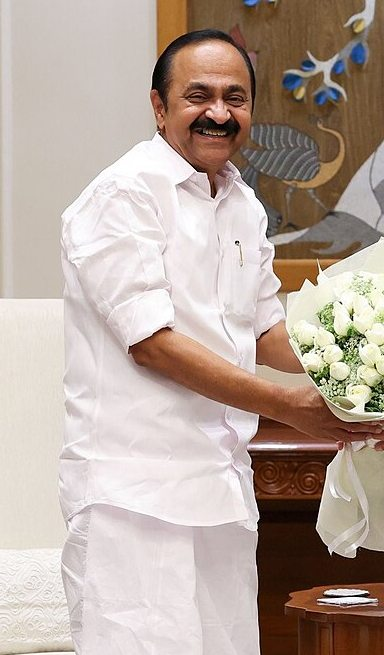
V. D. Satheesan
Chief Minister of Keralam since 18 May 2026.
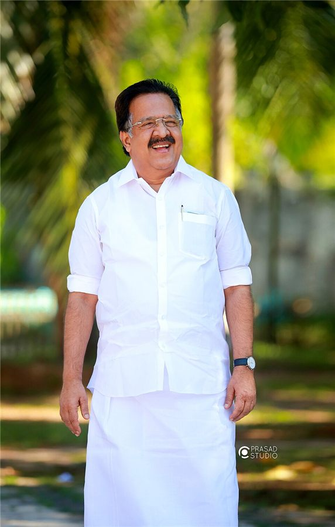
Ramesh Chennithala
Minister for Home, Vigilance and Coir.
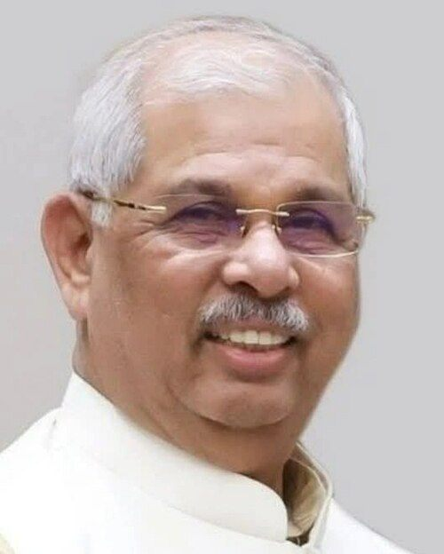
Rajendra Arlekar
Governor of Keralam.
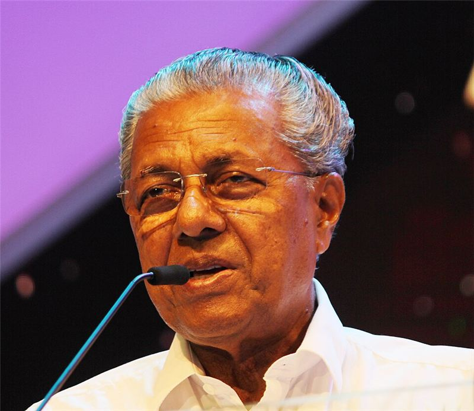
Pinarayi Vijayan
Leader of the Opposition. Chief Minister from 2016 to 2026.
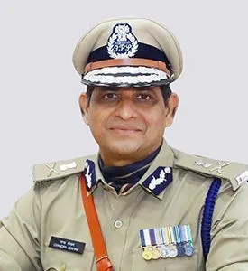
Ravada A. Chandrasekhar
State Police Chief.
ചരിത്രം History
Pepper grew wild in these hills, and for most of recorded history that fact brought the world to Kerala's ports.
- Ancient era
The spice coast
The port of Muziris, near present-day Kodungallur, traded pepper with Rome, Egypt and Arabia. The Chera kings ruled the region, and Roman coins still turn up in Kerala soil.
- 1st to 7th century
Three faiths arrive by sea
By tradition the apostle Thomas landed in 52 CE and founded the first Christian communities. Jewish traders settled around Kodungallur and later Kochi. The Cheraman Juma Mosque at Kodungallur is traditionally dated to 629 CE, which would make it one of the oldest mosques in India.
- 8th century
Adi Shankara
The philosopher Adi Shankara was born at Kalady, on the Periyar river. He travelled across India and shaped the Advaita Vedanta school of Hindu thought.
- 14th to 16th century
The Kerala school of mathematics
Madhava of Sangamagrama and his successors worked out infinite series for pi and for sine and cosine, about two centuries before similar results appeared in Europe.
- 1498
Vasco da Gama lands near Kozhikode
The Portuguese fleet reached Kappad beach in May 1498, opening the sea route from Europe. The Zamorin of Calicut ruled the busiest port on the coast. The Dutch and then the British followed the Portuguese.
- 1741
The Battle of Colachel
Marthanda Varma of Travancore defeated the Dutch East India Company, one of the first times an Asian kingdom beat a European trading power in open battle.
- 1924 to 1936
Temple entry
The Vaikom Satyagraha challenged the rule that kept lower castes off the roads around a temple. In 1936 the Maharaja of Travancore opened the state's temples to all Hindus by proclamation.
- 1956
Kerala becomes a state
Travancore-Cochin and Malabar were merged on 1 November 1956.
- 1957
An elected communist government
Voters put E. M. S. Namboodiripad's communist ministry in office, among the first anywhere in the world to win power through an election. Land reform and public spending on schools and health followed.
- 1991
Total literacy
After a mass campaign run largely by volunteers, Kerala was declared a fully literate state. Its literacy rate at the 2011 census was about 94 per cent, the highest in India.
ഉത്സവം Festivals
Kerala's year is kept by festivals, and people of every religion turn up for most of them.
Onam
Ten days in the month of Chingam, in August or September, for the return of King Mahabali. Flower carpets, new clothes, swings, and the Onam sadya eaten off a banana leaf.
Vishu
The new year in April. The first thing you see that morning should be the Vishukkani: gold, rice, fruit, a mirror and yellow konna flowers, arranged the night before.
Thrissur Pooram
Two temple groups face each other with rows of decorated elephants, a chenda percussion ensemble hundreds strong, and fireworks before dawn. It began in the 1790s under Sakthan Thampuran.
Vallam kali
Boat races held through the monsoon. The chundan vallam, or snake boat, is about 30 metres long and carries around a hundred rowers pulling to a song.
Pulikali
On the fourth day of Onam, men painted as tigers, bellies and all, dance through the streets of Thrissur to drums.
Theyyam season
From about October to May, in the villages of Kannur and Kasaragod, performers become gods for a night. See the arts chapter.
കല Arts
The green face on this site belongs to Kathakali. It is one of several performing traditions that are centuries old and still practised.
Kathakali
A dance drama that took shape in the 17th century. Actors do not speak. The story is sung by musicians behind them, and the actor tells it with hand gestures called mudras, with footwork, and above all with the eyes.
The make-up is a code. A green face (pacha) marks a noble hero, which is why our hacker wears one. Red beards are villains, black is for forest dwellers, and a plain yellow face is for women and sages. Getting painted and dressed takes three to four hours, and a traditional performance runs through the night.
Theyyam
A ritual of north Malabar with hundreds of distinct forms. The performer, usually from a community once kept outside the temple, is treated as the deity for the length of the rite and blesses everyone who comes, whatever their caste.
Koodiyattam
Sanskrit theatre performed in temple playhouses for well over a thousand years. UNESCO named it a Masterpiece of the Oral and Intangible Heritage of Humanity in 2001.
Mohiniyattam
A solo classical dance, slow and swaying, performed in white and gold. Its name means the dance of the enchantress.
Kalaripayattu
One of the oldest martial arts still taught. Students train in a sunken pit called a kalari, starting with the body, then sticks, then blades, and finishing with the urumi, a flexible sword.
Mural painting
Temple and palace walls painted with plant and mineral colours in five shades: red, yellow, green, black and white. Mattancherry Palace and Padmanabhapuram hold famous examples.
Raja Ravi Varma
Born at Kilimanoor in 1848, he painted Indian gods and epic heroines in European oils, then printed them cheaply so every household could own one.
Chenda melam
Percussion ensembles built around the chenda, a loud cylindrical drum. A full Panchari melam at a temple festival can last four hours.
Mudiyettu
A village ritual drama of the battle between the goddess Kali and the demon Darika, on UNESCO's intangible heritage list since 2010.
Ottan Thullal
A solo satirical performance invented by the poet Kunchan Nambiar in the 18th century, with the performer free to mock anyone in the audience.
Duff Muttu
A group performance from the Mappila Muslim tradition of Malabar. Men stand or sit in a line, singing and swaying while they beat a small frame drum called the duff.
Chavittu Nadakam
A musical drama of the Latin Christian community around Kochi, shaped under Portuguese influence. Actors in European-style costume stamp the wooden stage in time to the songs.
Oppana
A wedding song and clapping dance of the Mappila community, performed around the bride.
രുചി Food
Coconut in nearly everything, rice in several forms a day, and the spices the rest of the world once sailed here to buy.
The sadya
A sadya is a vegetarian feast served on a banana leaf, eaten with the right hand, with the leaf's narrow end to your left. A full one has more than twenty dishes placed in a fixed order.
Expect parippu (dal with ghee), sambar, avial (vegetables in coconut and curd), olan, kaalan, thoran, pachadi, banana chips, pickles, and at least two kinds of payasam to finish. Folding the leaf towards you afterwards means you enjoyed it.
Appam and stew
A fermented rice pancake with a soft centre and lace edges, served with vegetables or meat in mild coconut milk.
Puttu and kadala
Steamed cylinders of rice flour layered with coconut, eaten at breakfast with black chickpea curry.
Karimeen pollichathu
Pearl spot fish from the backwaters, coated in spice paste, wrapped in banana leaf and cooked over a flame.
Thalassery biryani
The Malabar coast's biryani, made with short-grained kaima rice and less heat than its northern cousins.
Parotta and beef fry
Flaky layered flatbread with beef slow-fried with coconut slivers and curry leaves. The unofficial state meal.
Chaya and pazham pori
Milky tea from a roadside shop with ripe banana fritters. This is how most Kerala afternoons go.
സാഹിത്യം Books
Kerala reads. Village libraries, a newspaper habit and a strong publishing trade have kept Malayalam writing in ordinary people's hands. Six Malayalam writers have won the Jnanpith, India's highest literary award.
Adhyatma Ramayanam Kilippattu
Thunchaththu Ezhuthachan, 16th century
The Ramayana retold in Malayalam verse by the poet called the father of the language. Many families still read it aloud through the month of Karkidakam.
Balyakalasakhi
Vaikom Muhammad Basheer, 1944
A short, plain-spoken love story that ends badly. Basheer wrote the way people talk, and Malayalam prose changed because of him.
Chemmeen
Thakazhi Sivasankara Pillai, 1956
A fisherman's daughter, a trader's son and the sea's rules about faithful wives. Translated widely and filmed in 1965.
Khasakkinte Itihasam
O. V. Vijayan, 1969
A schoolteacher arrives in a remote Palakkad village full of legends. Often named the book that divides Malayalam fiction into before and after.
Ente Katha (My Story)
Kamala Das, 1973
A frank account of a woman's inner life that scandalised readers on publication and is now a classic.
Randamoozham
M. T. Vasudevan Nair, 1984
The Mahabharata told by Bhima, the strong brother who always came second.
The God of Small Things
Arundhati Roy, 1997
Written in English and set in Aymanam, near Kottayam. It won the Booker Prize.
Aadujeevitham (Goat Days)
Benyamin, 2008
A migrant worker from Kerala is forced to herd goats in the Saudi desert. Based on a real man's account, and filmed in 2024.
Aarachaar (Hangwoman)
K. R. Meera, 2012
A young woman from a family of executioners is appointed to carry out a hanging while the television cameras watch.
Poets and writers worth knowing
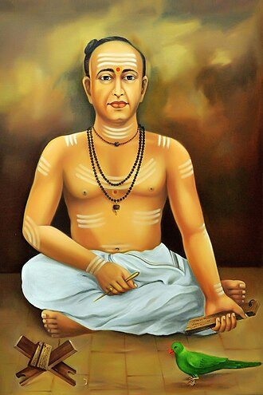
Thunchaththu Ezhuthachan
16th-century poet, called the father of the Malayalam language. Shown in a modern painting.
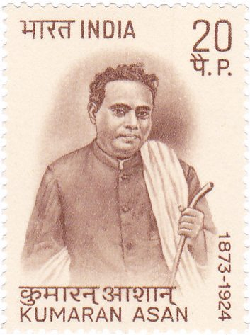
Kumaran Asan
Poet and reformer (1873 to 1924). Shown on a 1973 stamp.
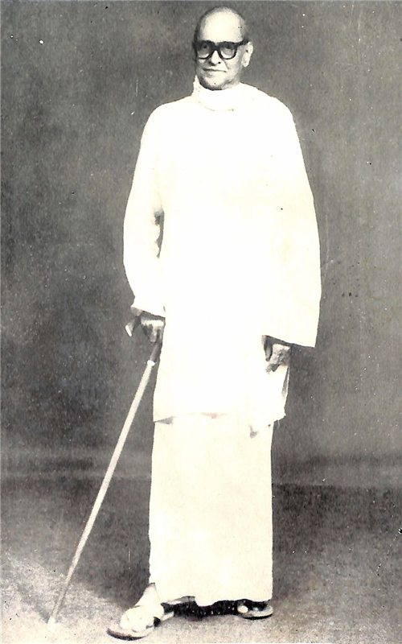
Vallathol Narayana Menon
Poet and founder of Kerala Kalamandalam, which revived Kathakali.
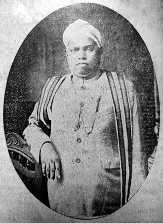
Ulloor S. Parameswara Iyer
Poet and literary historian. With Asan and Vallathol, one of the modern triumvirate.
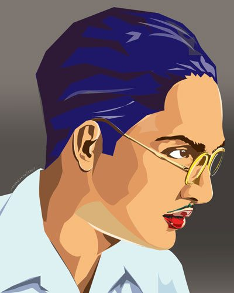
Changampuzha Krishna Pillai
Romantic poet, author of Ramanan. Shown in an illustration.
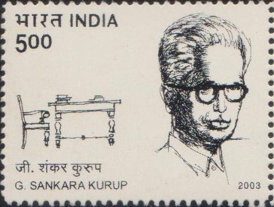
G. Sankara Kurup
First winner of the Jnanpith Award, in 1965. Shown on a 2003 stamp.
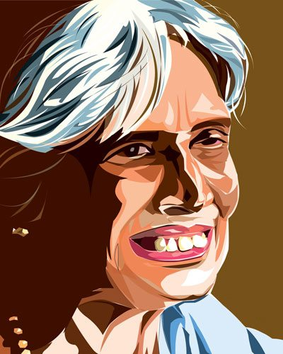
Balamani Amma
Poet of motherhood, and mother of Kamala Das. Shown in an illustration.
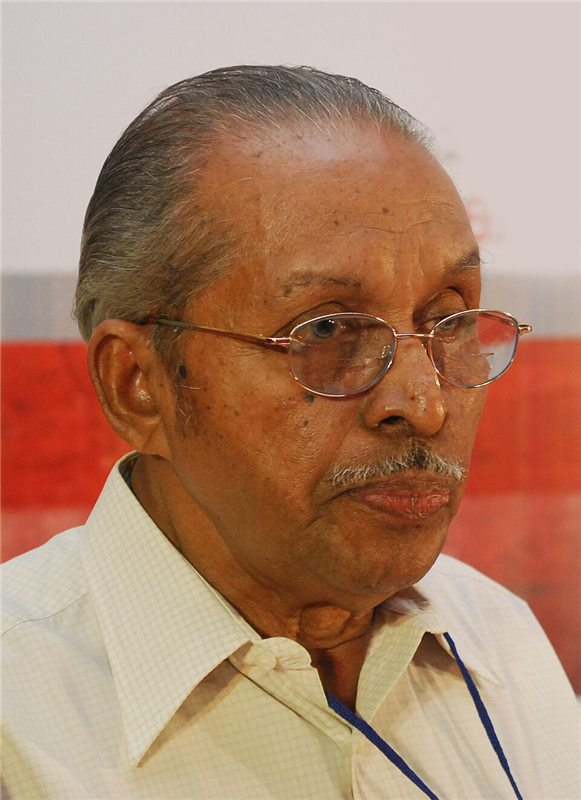
O. N. V. Kurup
Poet and film lyricist, Jnanpith winner in 2007.
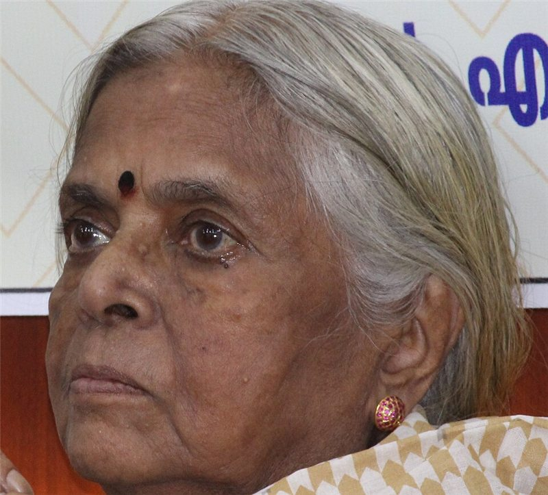
Sugathakumari
Poet and environmental campaigner who helped save Silent Valley.
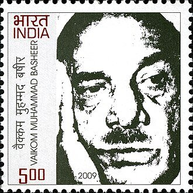
Vaikom Muhammad Basheer
Storyteller known as the Beypore Sultan, author of Balyakalasakhi and Pathummayude Aadu. Shown on a 2009 stamp.
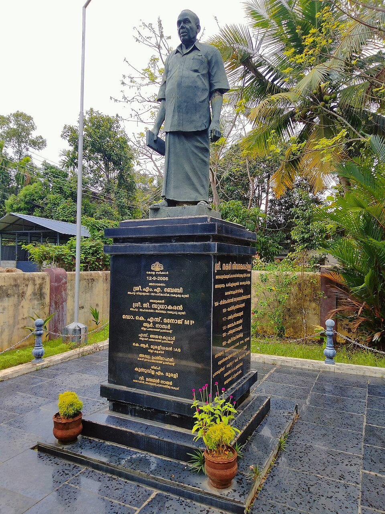
Thakazhi Sivasankara Pillai
Novelist of Kuttanad, author of Chemmeen and Kayar. Jnanpith winner in 1984. Shown as a statue at his memorial.
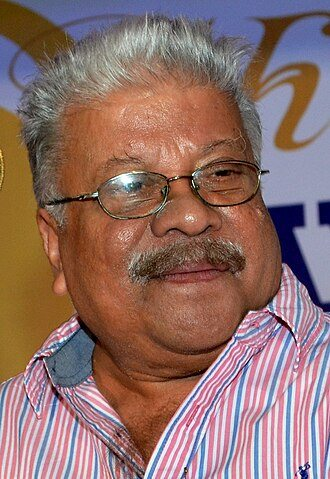
Punathil Kunjabdulla
Novelist and doctor, author of Smarakasilakal.
സിനിമ Cinema
Malayalam cinema is small in budget and large in reputation. It is known for scripts about recognisable people and for actors who are allowed to look ordinary.
Vigathakumaran
J. C. Daniel, silent era
The first Malayalam feature film, made by a man who sold his land to pay for it. The state's highest film honour carries his name.
Chemmeen
Ramu Kariat, 1965
The first South Indian film to win the President's Gold Medal for best feature, with songs people still sing.
Swayamvaram
Adoor Gopalakrishnan, 1972
The film that started Malayalam's new wave. Adoor's later Elippathayam won the British Film Institute's Sutherland Trophy.
Piravi
Shaji N. Karun, 1989
A father waits for a son who never comes home. It received a Caméra d'Or mention at Cannes.
Manichitrathazhu
Fazil, 1993
A psychological thriller set in a locked room of an old mansion. Remade in at least four languages.
Drishyam
Jeethu Joseph, 2013
A cable TV operator who learned everything from films protects his family from a murder investigation. Remade across India and abroad.
Kumbalangi Nights
Madhu C. Narayanan, 2019
Four brothers in a doorless house on a backwater island near Kochi work out how to be a family.
Jallikattu
Lijo Jose Pellissery, 2019
A buffalo escapes a butcher and a whole hill village loses its head chasing it. India's entry for the Oscars.
Manjummel Boys
Chidambaram, 2024
Friends from Kochi on a trip to Kodaikanal, and a real rescue from a cave. One of the highest-earning Malayalam films.
Names you will hear
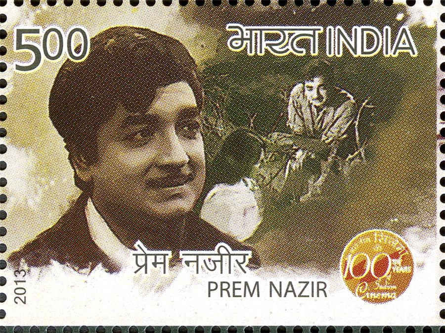
Prem Nazir
The evergreen hero, with more lead roles than any other actor. Shown here on a 2013 stamp.
Sathyan
Leading man of the 1950s and 1960s, admired for natural acting. Played Palani in Chemmeen.
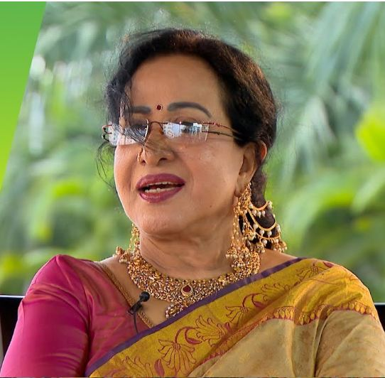
Sheela
Leading actress from the 1960s onward, often opposite Prem Nazir.
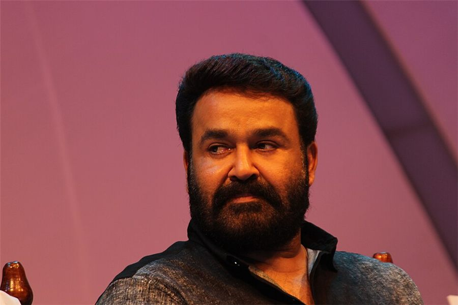
Mohanlal
Actor since 1980, known for making difficult roles look easy.
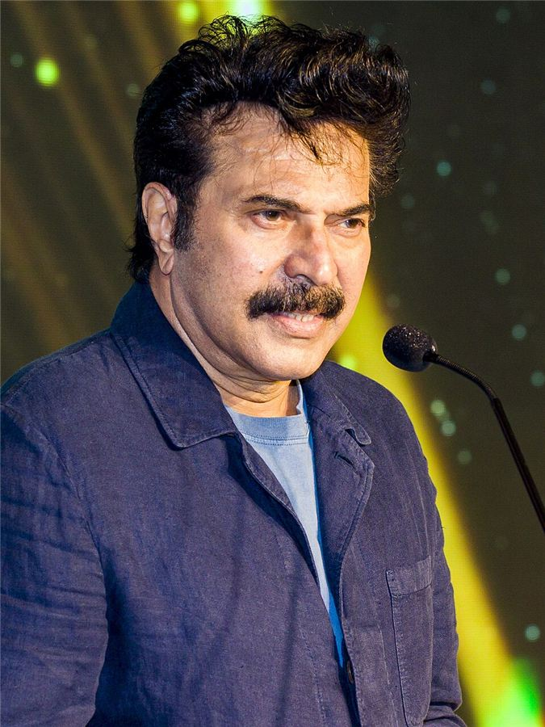
Mammootty
Actor since the 1970s, with three National Awards for best actor.
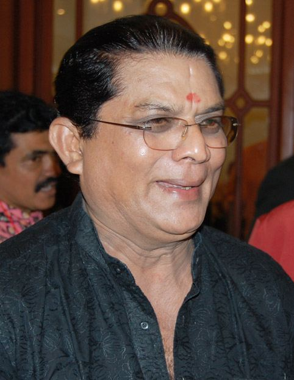
Jagathy Sreekumar
Comic actor with well over a thousand film appearances.
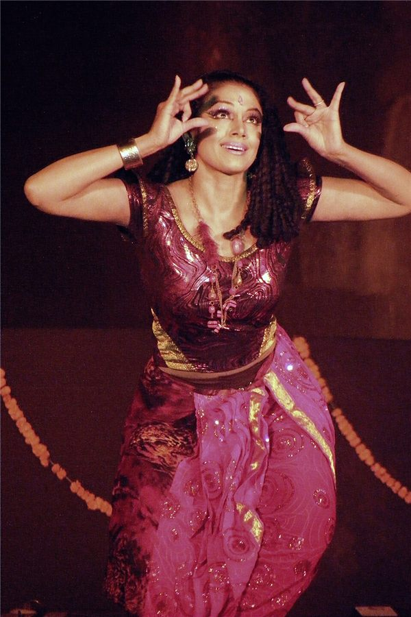
Shobana
Actress and Bharatanatyam dancer, the lead in Manichitrathazhu.
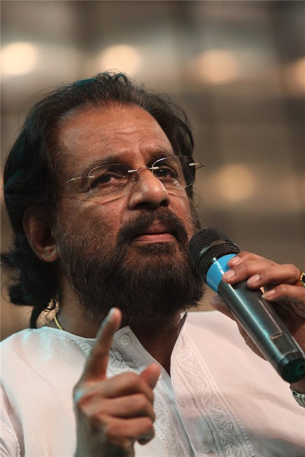
K. J. Yesudas
Playback singer whose voice has defined Malayalam film music for six decades.
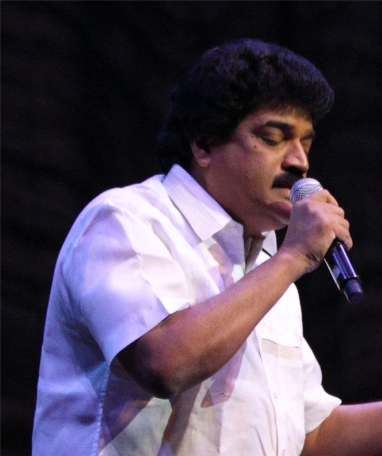
M. G. Sreekumar
Playback singer behind many of the best-loved songs of the 1980s and 1990s.
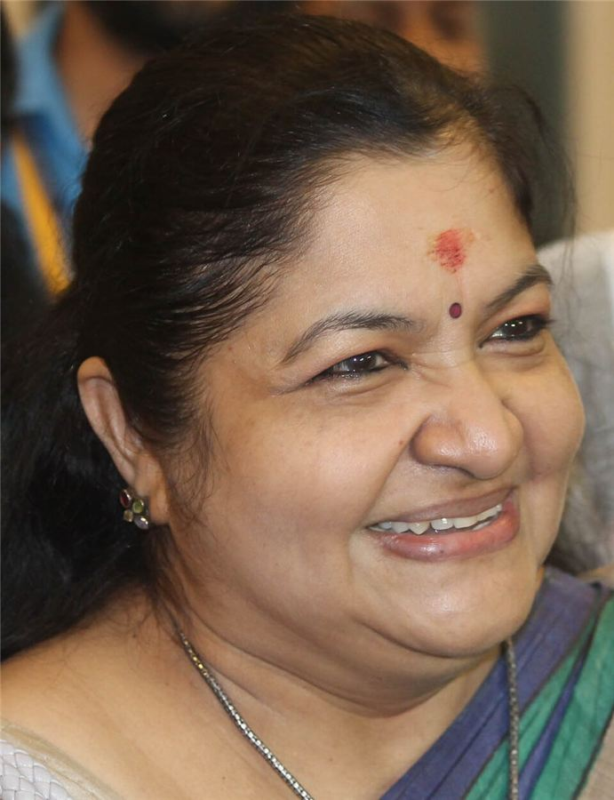
K. S. Chithra
Playback singer with six National Awards, known as the nightingale of Kerala.
Also worth knowing: Manju Warrier and Fahadh Faasil.
യാത്ര Places to go
The conference is in Kochi, which puts most of these within a day's travel. Stay an extra few days if you can.
Fort Kochi and Mattancherry
Portuguese churches, Dutch houses, a 16th-century synagogue, spice warehouses and Chinese fishing nets, all walkable. The Kochi-Muziris Biennale fills the old buildings with art every other winter.
Alappuzha and Kumarakom
The backwaters. Take a houseboat for a night or a public ferry for an afternoon, and watch village life go by at canal level.
Munnar
Tea country at about 1,600 metres, four hours from Kochi. Eravikulam National Park nearby protects the Nilgiri tahr, and the hills turn blue with neelakurinji flowers once every twelve years.
Athirappilly
The largest waterfall in Kerala, at its best just after the monsoon. Two hours from Kochi.
Thekkady
Periyar Tiger Reserve, set around a lake. Boat rides at dawn for elephants, and spice gardens along the road in.
Wayanad
Forest, coffee and paddy in the northern hills, with the Edakkal caves and their Stone Age rock carvings.
Varkala and Kovalam
The southern beaches. Varkala sits under red laterite cliffs; Kovalam is three crescents below a lighthouse.
Thiruvananthapuram
The capital, built around the Padmanabhaswamy Temple, with Travancore's palaces and museums close by.
Kannur and Bekal
The far north: Theyyam country, quiet drive-in beaches, and Bekal Fort, the largest fort in the state, standing in the sea spray.
എന്തു ചെയ്യാം What to do
For conference visitors. The venue, Kochi Marriott Hotel, is at Edappally in Kochi, so everything here starts from there. Pick by how much time you have.
If you have an evening
Sunset at Fort Kochi
Walk the beach promenade past the Chinese fishing nets as the fishermen haul them in, then eat fish you picked from the day's catch.
Watch Kathakali
Small theatres in Fort Kochi and Ernakulam stage shortened performances most evenings. Arrive an hour early to watch the actors put on their make-up.
Marine Drive
The waterfront walkway in Ernakulam, facing the harbour. Go at dusk, when half the city is out for a stroll.
Eat a Kerala dinner
Appam with stew, karimeen pollichathu, or parotta with beef fry. The food chapter above tells you what you are ordering.
Lulu Mall
One of India's largest malls is next door to the venue, if all you want is a short walk and something familiar.
Tea and banana fritters
Find a roadside chaya kada, ask for a chaya and a pazham pori, and you have done the most Kerala thing possible.
If you have half a day
Mattancherry on foot
The Dutch Palace with its murals, the Paradesi Synagogue, and the spice and antique shops of Jew Town are all within a few streets.
Cross the harbour by boat
Take the public ferry or the Kochi Water Metro between Ernakulam and the islands. It costs very little and is the best view of the port.
Hill Palace, Tripunithura
The former seat of the Cochin royal family, now a museum set in gardens on the edge of the city.
A Kalaripayattu demonstration
Several kalaris in Kochi put on daily shows of the martial art, with swords, shields and the flexible urumi.
An Ayurvedic massage
An hour of warm herbal oil is the traditional cure for long flights and longer conference days. Use an established centre.
Cherai Beach
A long, quiet beach on Vypin island, about an hour from the city, with backwaters on the other side of the road.
If you have a full day
The backwaters
Alappuzha is about an hour and a half south. Hire a small covered boat for a few hours through the narrow canals, or a houseboat with lunch on board.
Athirappilly and Vazhachal
Two waterfalls on the same forest road, about two hours away. Walk down to the foot of Athirappilly to feel how much water it moves.
Kumarakom
A bird sanctuary on the edge of Vembanad Lake. Go early in the morning, when the birds are out and the heat is not.
A cooking class
Home cooks around Fort Kochi teach a morning of grinding, tempering and folding, and you eat what you make.
Muziris heritage sites
North of Kochi around Kodungallur and Paravur: old synagogues, the Cheraman mosque, forts and markets, linked by boat.
Thrissur
The cultural capital, two hours north. Vadakkunnathan Temple sits in the middle of the round where the Pooram is held.
If you have two or three days
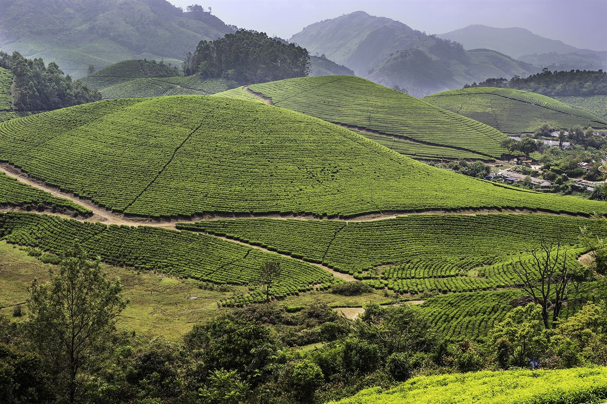
Munnar
Four hours into the hills. Walk through tea estates, visit a tea factory, and look for Nilgiri tahr at Eravikulam.
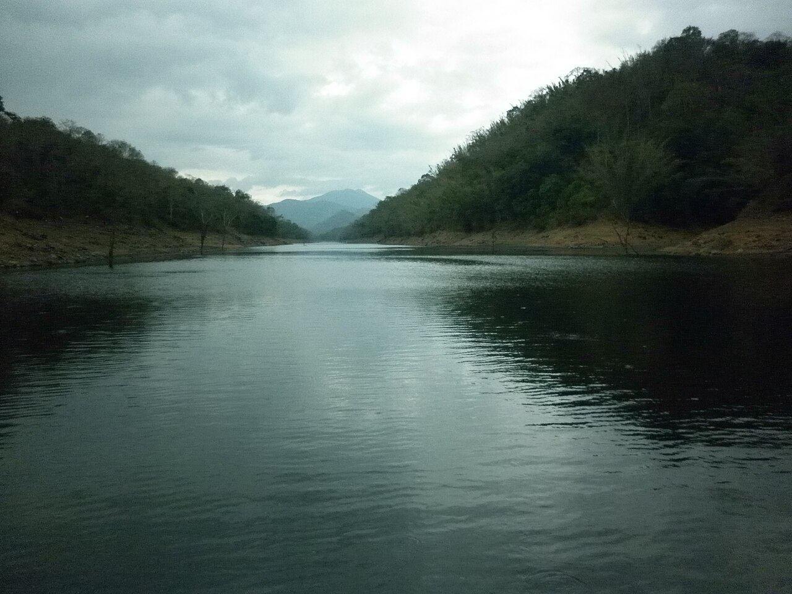
Thekkady
Periyar Tiger Reserve: a dawn boat ride on the lake, a guided forest walk, and spice gardens on the way.
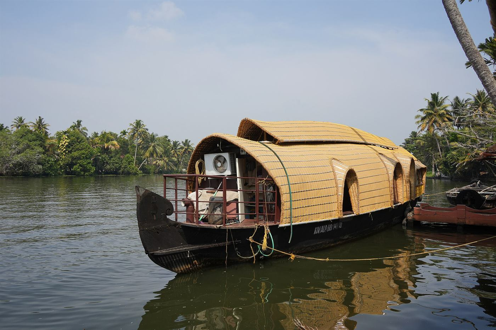
A night on a houseboat
Board at Alappuzha or Kumarakom at noon, drift through Kuttanad, moor at dusk, and wake up on the water.
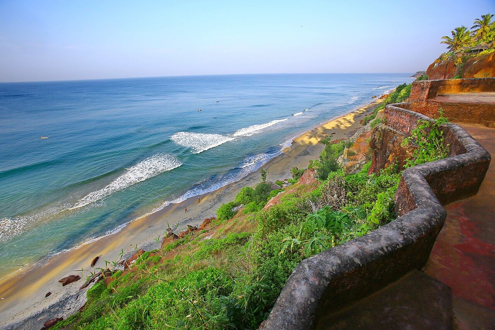
Varkala
Cliff-top cafes above the beach, three to four hours south by train. Good for doing nothing after a conference.
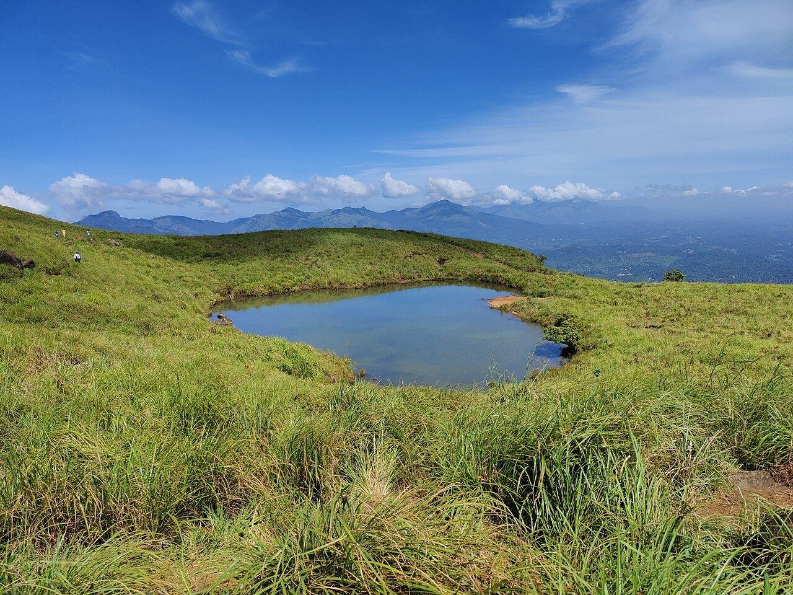
Wayanad
Further north and worth it if you have the time: forest, coffee estates, Edakkal caves and cool nights.
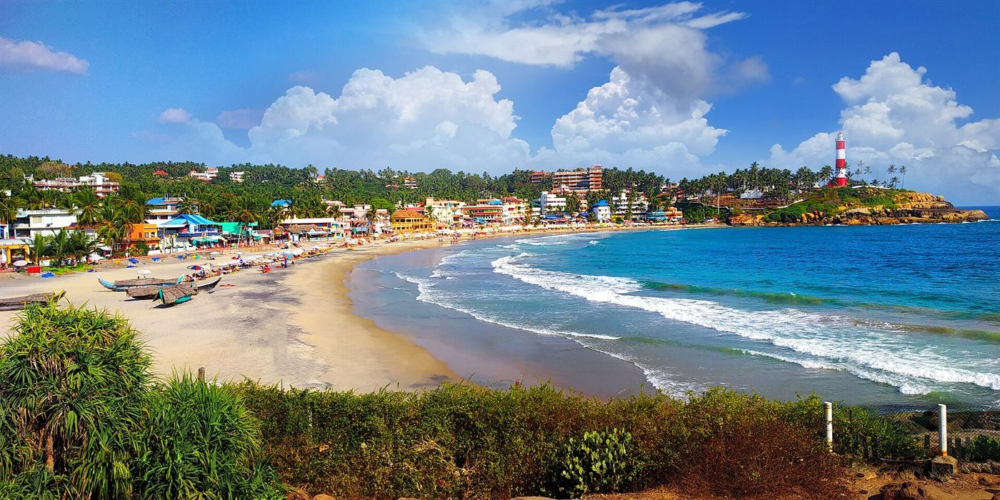
Thiruvananthapuram and Kovalam
The capital's palaces and museums, with Kovalam's beaches half an hour beyond.
Good to know
Weather in May
Hot and humid, in the low thirties Celsius, with heavy pre-monsoon showers some afternoons. Carry water and a small umbrella.
Getting around
Kochi has a metro, app taxis and auto-rickshaws. The airport is at Nedumbassery, north of the city; allow about an hour to the venue.
Opening days
The Paradesi Synagogue closes on Fridays and Saturdays, and the Dutch Palace on Fridays. Check times before you set out.
Temples
Remove your shoes and dress modestly. Some temples admit only Hindus, and some ask men to enter bare-chested in a mundu.
Money and language
Cards and UPI work almost everywhere in the city. English is widely understood, and a "nanni" (thank you) is always appreciated.
What to take home
Pepper and cardamom from Mattancherry, banana chips, a kasavu mundu or saree with its gold border, and coir or an Aranmula metal mirror.
പ്രതിഭകൾ People
A short and incomplete list of people from Kerala who changed things, here or far away.
One caste, one religion, one God for humankind.Sree Narayana Guru
Thinkers and reformers
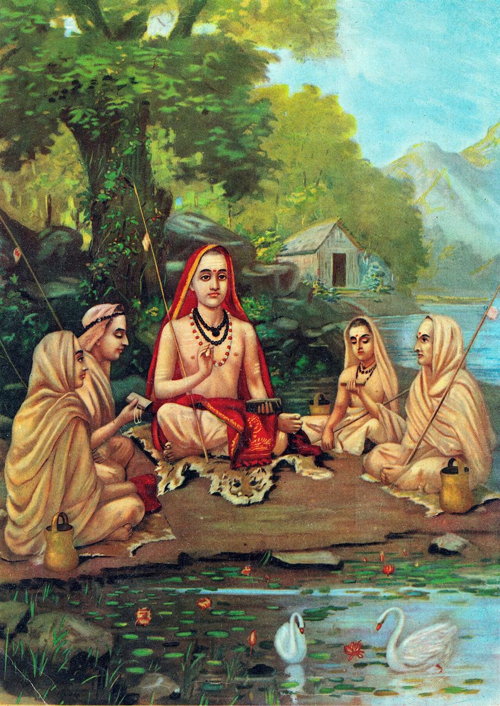
Adi Shankara
Eighth-century philosopher from Kalady who set out Advaita Vedanta and founded monasteries at the four corners of India. Shown in a painting by Raja Ravi Varma.
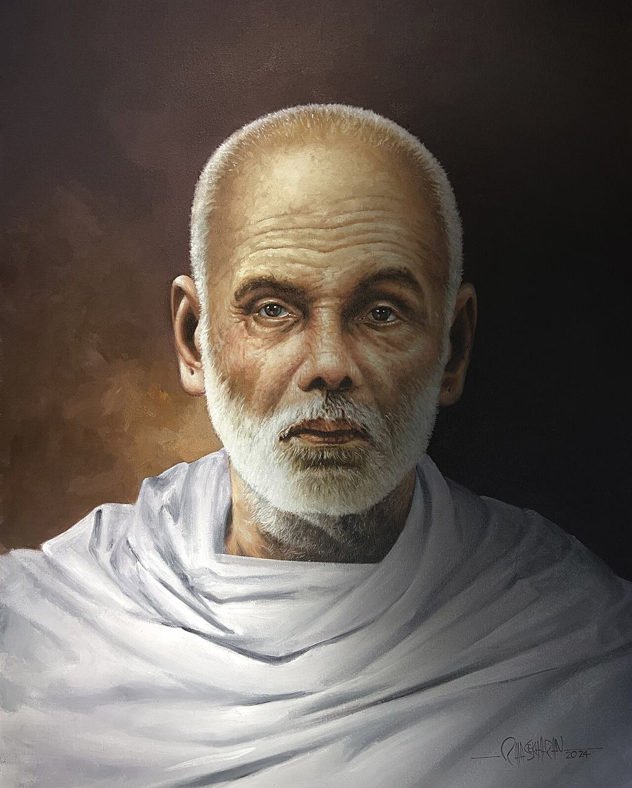
Sree Narayana Guru
Saint and social reformer (1856 to 1928) who consecrated temples open to everyone and told his followers to gain strength through education. Shown in a modern painting.
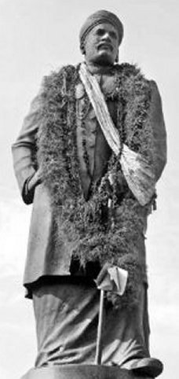
Ayyankali
Dalit leader (1863 to 1941) who rode a bullock cart down a road forbidden to his caste and led a farm strike to get Dalit children into school. Shown as a statue.
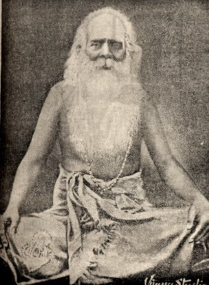
Chattampi Swamikal
Scholar and reformer who argued that scripture and learning belonged to all castes and to women.
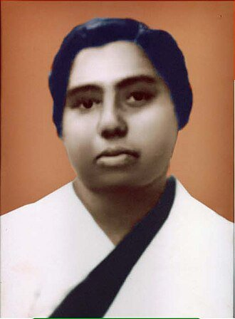
Akkamma Cherian
Led a mass march on the Travancore palace in 1938 for the release of political prisoners, and stood her ground before the soldiers.
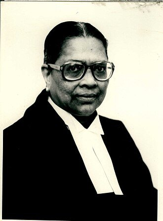
Fathima Beevi
From Pathanamthitta. In 1989 she became the first woman judge of the Supreme Court of India.
Rulers and leaders
Marthanda Varma
Built modern Travancore in the 18th century and defeated the Dutch at Colachel.
Pazhassi Raja
Fought a guerrilla war against the East India Company from the forests of Wayanad until his death in 1805.
Swathi Thirunal
Maharaja of Travancore and a composer whose songs are central to Carnatic music.
E. M. S. Namboodiripad
First chief minister of Kerala, at the head of the communist government elected in 1957.
K. R. Narayanan
Born in a thatched hut at Uzhavoor, he became a diplomat and then President of India from 1997 to 2002.
V. K. Krishna Menon
Diplomat and defence minister who argued India's case at the United Nations.
Science and building
Madhava of Sangamagrama
Mathematician of the 14th century who found infinite series for pi and the trigonometric functions.
E. K. Janaki Ammal
Botanist from Thalassery whose work on sugarcane and plant chromosomes is still cited.
Anna Mani
Physicist from Peermade who built India's weather instruments and mapped its solar and wind energy.
E. C. G. Sudarshan
Theoretical physicist from Pallom, known for work on the weak force and quantum optics.
Verghese Kurien
Born in Kozhikode. He organised India's dairy farmers into cooperatives and made the country the largest milk producer in the world.
E. Sreedharan
The engineer behind the Konkan Railway and the Delhi Metro, known for finishing public works on schedule.
Arts and sport
Raja Ravi Varma
The painter who gave India its popular images of gods and heroines.
K. J. Yesudas
A voice on tens of thousands of recordings, in Malayalam and many other languages.
Mammootty and Mohanlal
The two actors who have led Malayalam cinema since the 1980s.
P. T. Usha
Sprinter from Payyoli who missed an Olympic medal in 1984 by one hundredth of a second and became the face of Indian athletics.
P. R. Sreejesh
Hockey goalkeeper from Kizhakkambalam with two Olympic bronze medals.
I. M. Vijayan
Footballer from Thrissur who sold soda at the stadium as a boy and went on to captain India.
സാങ്കേതികവിദ്യ Technology
The reason a security conference fits here. Kerala has a long record of putting technology in public hands early.
A rocket launched from a fishing village
India's space programme began at Thumba, near Thiruvananthapuram, on 21 November 1963. The site was chosen because it sits close to the magnetic equator. A local church became the first office, and rocket parts arrived by bicycle.
The Vikram Sarabhai Space Centre still stands there. The church is now a space museum.
Technopark, 1990
India's first technology park, in Thiruvananthapuram. Infopark in Kochi followed in 2004, and both appear in the drawing at the top of this page.
Free software in schools
The state's school IT programme moved classrooms to free and open source software in the 2000s, so a generation learned computing on GNU/Linux.
Akshaya
Started in Malappuram in 2002 to teach one person in every household to use a computer, through neighbourhood centres that still handle government services.
Internet as a right
Kerala declared internet access a basic right in 2017 and built K-FON, a state-owned fibre network, to bring free connections to its poorest households.
Kerala Startup Mission
The state agency behind incubators, fab labs and maker spaces in colleges across Kerala.
Cyberdome
A Kerala Police centre, opened in 2016, where officers work with volunteer security researchers.
Photo credits
Photographs are from Wikimedia Commons and have been resized and cropped to fit. Each is used under the licence shown.
- Adi Shankara by Raja Ravi Varma, by Raja Ravi Varma. Public domain.
- Appam and stew, by Nithajay. CC BY-SA 4.0.
- Athirappilly Falls, by Souradeep Ghosh. CC BY-SA 4.0.
- Bekal Fort, by Shubham Srivastava. CC BY-SA 3.0.
- Canal near Champakulam, by Ingo Mehling. CC BY-SA 4.0.
- Chembra Peak lake, by Ravi Dwivedi. CC BY-SA 4.0.
- Chenda melam, by Liji Jinaraj from San Francisco, USA. CC BY-SA 2.0.
- Chinese fishing nets, by Bockomet. CC BY-SA 4.0.
- Fort Kochi beach at sunset, by Rangan Datta Wiki. CC BY-SA 4.0.
- Hill Palace Museum, by NobinJose6. CC BY-SA 4.0.
- Houseboat at Nedumudy, by Ingo Mehling. CC BY-SA 4.0.
- Infopark, by Ranjithsiji. CC BY-SA 4.0.
- Kalaripayattu, by Ginu Plathottam. CC0.
- Kappad beach, by Gannu03. CC BY-SA 4.0.
- Karimeen pollichathu, by Jiss Tom palelil. CC BY-SA 4.0.
- Kathakali make-up, by Pradeep717. CC BY-SA 4.0.
- Kochi Metro, by Arunvrparavur. CC BY-SA 4.0.
- Kochi Water Metro, by Ravi Dwivedi. CC BY-SA 4.0.
- Koodiyattam, by Bobinson. CC BY-SA 4.0.
- Kovalam beach, by Georgeumartin. CC BY-SA 4.0.
- Kuttanad paddy fields, by Anil R.V. CC BY-SA 3.0.
- Marine Drive walkway, by Vachan5678. CC BY-SA 4.0.
- Mattancherry Palace, by Ranjith Siji. CC BY-SA 4.0.
- Mohiniyattam, by Shagil Kannur. CC BY-SA 4.0.
- Monsoon rain, by Prasad Pillai from Muscat, Oman. CC BY 2.0.
- Munnar tea estates, by Joydeep Chakraborty. CC BY-SA 4.0.
- Nehru Trophy boat race, by Ronald Tagra. CC BY 2.0.
- Paradesi Synagogue, by Ingo Mehling. CC BY-SA 4.0.
- Parashurama statue, by കാക്കര. CC BY-SA 3.0.
- Pepper, by Schlawensko. CC BY-SA 4.0.
- Periyar lake, Thekkady, by Sibyperiyar. CC BY-SA 3.0.
- Pookalam, by Edgeofthewood. CC BY-SA 4.0.
- Pulikali, by Jinoy Tom Jacob. CC BY-SA 4.0.
- Puttu and kadala, by Jackson John 10. CC BY-SA 4.0.
- Shakuntala by Raja Ravi Varma, by Raja Ravi Varma. Public domain.
- Sree Narayana Guru painting, by Rajasekharan Parameswaran. CC BY-SA 4.0.
- Sree Padmanabhaswamy Temple, by rusticus80. CC BY-SA 2.0.
- St Francis Church, by Ranjith Siji. CC BY-SA 4.0.
- Technopark, by Ajithpithu. CC BY-SA 3.0.
- Temple mural replica, by Akhilan. CC BY-SA 3.0.
- Theyyam, by Shagil Kannur. CC BY-SA 4.0.
- Thiruvathirakali, by Jishnumpr. CC BY-SA 4.0.
- Thrissur Pooram, by Fenomenon123. CC0.
- Varkala cliff, by Lukas Vacovsky. CC BY-SA 3.0.
- Vembanad Lake at Kumarakom, by Rison Thumboor. CC BY-SA 4.0.
- Western Ghats, by Jefin. CC BY-SA 4.0.
- Prem Nazir stamp, by India Post, Government of India. GODL-India.
- Sheela, by Asianet. CC BY 3.0.
- Mohanlal, by Sanu N. CC BY-SA 4.0.
- Mammootty, by Firoze Edassery. CC BY-SA 4.0.
- Jagathy Sreekumar, by Anees Kodiyathur. CC BY 3.0.
- Shobana, by Aparna Subramanian from Pune, India. CC BY 2.0.
- M. G. Sreekumar, by Lijesh K. CC BY-SA 3.0.
- K. S. Chithra, by Dr. Ajay Balachandran. CC BY-SA 4.0.
- V. D. Satheesan, by Prime Minister's Office. GODL-India.
- Pinarayi Vijayan, by Sanu N. CC BY-SA 4.0.
- K. J. Yesudas, by E P Sajeevan. CC BY-SA 4.0.
- Rajendra Arlekar, by Prime Minister's Office. GODL-India.
- Ramesh Chennithala, by Iamhere201816. CC BY-SA 4.0.
- Rocket at Thumba, by Times of India. Public domain.
- Duff Muttu, by Irshad P. CC BY-SA 4.0.
- Chavittu Nadakam, by Fotokannan. CC BY-SA 4.0.
- State Police Chief, photo from the Kerala Police website.
- Kathakali, Kalamandalam Gopi, by Mullookkaaran. CC BY-SA 3.0.
- Festival elephants, by spisharam. CC BY 2.0.
- Aranmula boat race, by Pdhang. CC BY-SA 4.0.
- Kumaran Asan stamp, by India Post, Government of India. GODL-India.
- Vallathol Narayana Menon, by Unknown author. Public domain.
- Ulloor S. Parameswara Iyer, by Unknown author. Public domain.
- Changampuzha illustration, by Sreedharantp at Malayalam Wikipedia. CC BY-SA 3.0.
- G. Sankara Kurup stamp, by India Post, Government of India. GODL-India.
- Balamani Amma illustration, by Sreedharantp at Malayalam Wikipedia. CC BY-SA 3.0.
- O. N. V. Kurup, by KannanShanmugam. CC BY 3.0.
- Sugathakumari, by Navaneeth Krishnan S. CC BY-SA 4.0.
- Punathil Kunjabdulla, by Augustus Binu/ facebook. CC BY-SA 3.0.
- Thunchaththu Ezhuthachan painting, by Thunchangramam. CC BY-SA 4.0.
- Vaikom Muhammad Basheer stamp, by India Post, Government of India. GODL-India.
- Thakazhi Sivasankara Pillai, by Vijayanrajapuram. CC BY-SA 4.0.
- Ayyankali statue, by Sundaram7 at English Wikipedia. CC BY-SA 3.0.
- Akkamma Cherian, by Jacob.jose at Malayalam Wikipedia. Public domain.
- Fathima Beevi, by Supreme Court of India. GODL-India.
- Chattampi Swamikal, by Unknown author. Public domain.
The Kerala artwork at the top of the page and the Kerala line drawing belong to BSides Kerala.


.jpg){kind=link}


.jpg){kind=link}


.jpg){kind=link}


.jpg){kind=link}